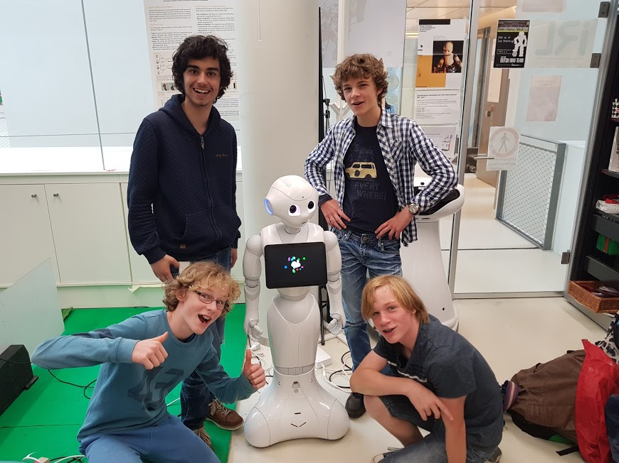

Ai learns to drive
For the last half a year I worked on an ai that wil learn to drive a track, It uses Nueral Evolution to train the cars. more info can be found here.
For the last half a year I worked on an ai that wil learn to drive a track, It uses Nueral Evolution to train the cars. more info can be found here.
Hi there I'm working on a new project Boids. This is a floking simulation
I got the idea after watching a youtube video and have just made a new github repo where you can check it out for your self.
here you can find the original video by Sebastian Lague.
and here you can find my project
August 27th 2019
I have recently started working on a neural network for my self. This is for me to learn how neural networks work. It is still very basic and can't learn but if you have the right data you could (with a little refactoring of the code, because at this point it can only create a random neural net, I have chosen this because I want the net to learn) have it working. Keep in mind that I will expand this project over time and that it might take me a lot of it to develop this into something useful. Anyway
here
is the source code. It is written in python. you can get python
here
and you don't need any libraries.
March 9th 2019
This is a little dungeon crawler game where you move by typing commands like
w, move up
a, move left
s, move down
d, move right
"Item" means that you can type in the name of an item in that spot of the command
there are 3 Items in the current state of the game V1.0
healing potion, gives you 20 health back
sword, you can use it to deal damage to monsters
and the key
source code
here
!! you do need to have python installed, you can download it
here
March 9th 2019
 Well, I went to Japan and it was amazing. I went there for a robot competition because I won another prize earlier in the year. The trip to Japan was great although I didn't like the food in the airplane. When we arrived in Tokyo we went to the house. The next day we went exploring the neighborhood. The next 3 days we went to the workshop to learn how to program pepper (A humanoid robot). Then the time came we had to show our skills on stage for the jury. We didn't end up in a good spot though. At least not in the top three. The last two days we went to the biggest arcade in the world and to a cool mauntain. That was my time in Tokyo.
want to see more click here
or want to read more in depth click here
The last project I did in the first grade was a project which was based on the Philips Hue lamps. To kick off the project we went to a small office of Q42. There We Talked about what we were going to do with the project. I and my team decided to make a lamp where you as a user could put color presets on it and create your own optimal ambiance.